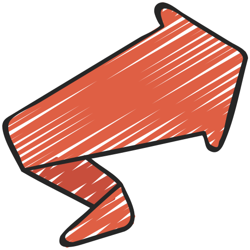

Vyrdepil
Spel og verktøy laga for grunnskulen — med personvern i fokus
VERSJON 0.2
I denne nye versjonen er det ein del endringar. Mest synleg er ei oppdatering av utsjånad. Dei fleste spel og verktøy er oppdaterte med eit samlande design. Det er også forbetringar i lagringssystemet og ein haug med feil er retta.
Sida er framleis i ein prøveversjon og endringar vil kome. På grunn av endringane kan det vere at high score, kortsamling eller andre ting har vorte tilbakestilt til 0.
Spel

Kludre Klodrian
Mattespel med pufferfisk. Svar på reknestykke og styr fisken gjennom riktige port!
Spel no →
Heimsank
Løys matteoppgåver og vinn samlekort. Bygg di eiga samling!
Spel no →
Reknedæsj
Løpespel med matteoppgåver og dobbelhopp. Kor langt kjem du?
Spel no →
Rettslause Raud
Naviger gjennom aliens på ein lavaplanet og løys mattestykker.
Spel no →
BåreTevling
Slagskip med koordinatsystem. Lær deg å bruke A1, B2 osv i to-spellar eller mot AI!
Spel no →Aktivitetar i klasserommet

Frødekapp
Kviss for klasserommet! Live fleirspelar, soloøving og quiz-editor.
Opne →
Frødebrett
Kviss for klasserommet! 2-6 team, dagens dobbel og finalerunde.
Opne →
Frødesams
Gjett svar basert på meiningsmålingar. 2-4 lag, quiz-master-kontroll og finalerunde.
Opne →
Etikktesten
Personleg sjøltest med etiske dilemmaer. Kva slags etikk tenkjer du?
Opne →
Heite Stavrim
Kategorispel for klasserommet. Vel bokstavar, kategoriar og konkurrer med team!
Spel no →
Ordsmia
Smi ord frå ni bokstavar i fleire spelmodusar – også for klasserom.
OBS - Dette spelet er i beta-modus med fleire kjente bugs.
Spel no →
Ordaklok
Øv omgrep i fire modusar — skriv svar, fleirval, hugsekort eller tevling. Lag eigne lister og del dei med ein lenkje.
Opne →
Talsmia
Klassisk talspel med: vel store/små tal og kom nærast målet.
Spel no →
Tidvis
Tren på klokka — analog, digital og som tekst på nynorsk. Vel vanskegrad og samle poeng, streak og merke.
Spel no →Verktøy

BiletFlett
Lag vakre bilete-collagar direkte i nettlesaren. Ingen opplasting til server.
Opne →
Reinskore bilete
Reduser bilete til reine monotone fargar.
Opne →
Klassekart
Planlegg klasserommet med drag-and-drop. Møbleringsmalar, tilfeldig plassering og utskrift.
Opne →
Flokkdeilar
Del klassen inn i tilfeldige grupper. Vis resultatet på storskjerm, ta omsyn til konfliktar og lagra klasselistene dine.
Opne →Eikekveik
Enkel idémyldring og kategorisering. Drag nodar fritt, koplingar teiknast automatisk.
Opne →Handsam bilete
Resize, crop, rotasjon og watermark. Behandle mange bileter samstundes med ZIP-nedlasting.
Opne →Ordskodde
Lim inn ein tekst og lag ei ordsky av dei mest brukte orda. Vel form, fargar og skrifttype — last ned eller skriv ut.
Opne →Fleire verktøy
Nye verktøy er under utvikling og kjem snart!
Kjem snartPersonvern
Personvern og datasikkerheit
Vi tek personvern på alvor! Alle spel og verktøy på denne sida er laga for å verna dine data og ditt personvern.
Dine data er trygge
- Alt køyrer lokalt: All spel- og verktøylogikk køyrer i nettlesaren din. Ingen brukardata blir sende til nokon tenar.
- Ingen cookies eller sporing: Vi brukar ingen cookies, analytics eller sporingsverktøy.
- Open kjeldekode: All kode er synleg og kan inspiserast av kven som helst.
- Ingen innlogging: Alt er gratis og krevjer ingen brukarregistrering.
Kva data lagrast?
Nokre spel bruker nettlesaren sin localStorage for å hugse framgang. Det er viktig å skilje mellom cookies og localStorage:
| Cookies | localStorage | |
|---|---|---|
| Blir sendt til server? | Ja — cookies blir automatisk sende med kvar førespurnad til nettsida sin server | Nei — localStorage-data forlèt aldri nettlesaren din |
| Kan brukast til sporing? | Ja — cookies er den vanlegaste metoden for sporing og reklame på nett | Nei — dataen er berre tilgjengeleg for nettsida på di eining |
| Brukast på denne sida? | ❌ Nei, vi brukar ingen cookies | ✅ Ja, berre for å hugse toppscore og kortsamlingar lokalt |
localStorage-data ligg berre på di eining, og ingen andre kan sjå den. Du kan slette den når som helst via nettlesarinnstillingane.
Kludre Klodrian
| Kva | Kvifor |
|---|---|
| Toppscore (eitt tal) | For å vise personleg rekord mellom speløkter |
Ekstern tilgang: Ingen. Spelet fungerer heilt offline etter at sida er lasta.
Ordsmia
| Kva | Kvifor |
|---|---|
| Toppscore (eitt tal) | For å vise personleg rekord mellom speløkter |
| Historikk over beste ord (inntil 20 ord) | For å vise tidlegare gode ord du har funne |
Ekstern tilgang: Ingen. Ordsmia brukar lokal ordliste og køyrer heilt i nettlesaren etter at sida er lasta.
Talsmia
| Kva | Kvifor |
|---|---|
| Toppscore (eitt tal) | For å vise personleg rekord mellom speløkter |
| Historikk over beste rundar (inntil 20) | For å vise tidlegare uttrykk, avvik frå mål og poeng |
Ekstern tilgang: Ingen. Talsmia køyrer heilt i nettlesaren og sender ikkje speldata ut.
Heimsank
| Kva | Kvifor |
|---|---|
Kortsamling per kategori (kort-ID, vanskegrad, rekneart, tidspunkt) – lagra under felles VyrdepilStorage-nøkkel |
For å ta vare på samlinga di mellom speløkter |
Ekstern tilgang: Kortbilete blir lasta frå Wikimedia Commons (upload.wikimedia.org) kvar gong du spelar. Det betyr at Wikimedia sine tenarar kan sjå IP-adressa di i sine loggar. Ingen personleg informasjon utover IP-adresse blir delt.
BåreTevling
| Kva | Kvifor |
|---|---|
| Aktivt spel (koordinatar og skip) | For at du skal kunne ta pause og halde fram der du slapp |
Ekstern tilgang: Ingen. Spelet fungerer heilt offline etter at sida er lasta.
Reknedæsj
| Kva | Kvifor |
|---|---|
| Toppscore (eitt tal) | For å vise personleg rekord mellom speløkter |
Ekstern tilgang: Ingen. Spelet fungerer heilt offline etter at sida er lasta.
Rettslause Raud
Ingen data blir lagra. Spelet brukar ikkje localStorage eller nokon annan form for lagring.
Ekstern tilgang: Ingen. Spelet fungerer heilt offline etter at sida er lasta.
Frødekapp
| Kva | Kvifor |
|---|---|
| Quiz-editor-utkast (spørsmål, alternativ) | For å lagre utkast til quiz-ar du jobbar med |
| Sist brukte kallenamn | For å sleppe å skrive namn kvar gong (valfritt) |
Ekstern tilgang: Live-quiz brukar PeerJS for direkte kommunikasjon mellom nettlesarar (WebRTC). PeerJS sin signalserver (0.peerjs.com) ser berre IP-adresser i ~2 sekund under tilkopling — aldri quiz-innhald, namn eller svar. All quiz-data går direkte mellom nettlesarane (P2P, kryptert).
BiletFlett
Ingen data blir lagra. Bilete du lastar opp blir berre lese inn i minnet med FileReader API. Når du lukkar sida, er alt borte.
Ekstern tilgang: Ingen. Verktøyet fungerer heilt offline etter at sida er lasta.
Reinskore bilete
Ingen data blir lagra. Bilete du lastar opp blir berre behandla i nettlesaren sitt minne. Ingenting blir lagra når du lukkar sida.
Ekstern tilgang: Ingen. Verktøyet fungerer heilt offline etter at sida er lasta.
Flokkdeilar
| Kva | Kvifor |
|---|---|
| Klasselister med elevnamn | For å gjenbruke same liste på tvers av økter utan å skrive inn namn på nytt |
| Valfrie relasjonar mellom elevar (ja/kanskje/aldri) — berre om «Utvida administrasjon» er aktivert | For at trekninga skal ta omsyn til konfliktar eller preferansar læraren kjenner til |
| Hash av PIN-kode (om utvida admin er aktivert) — aldri klartekst-PIN | For å beskytte redigeringa av relasjonane mot uvedkomande |
Ekstern tilgang: Ingen. Verktøyet fungerer heilt offline. Elevnamn og relasjonar lagrast berre lokalt i nettlesaren og forlèt aldri eininga di.
Klassekart
| Kva | Kvifor |
|---|---|
| Lagra klasseoppsett (elevnamn, plassering, møblar) | For å lagre og hente namngjeve klasseoppsett mellom økter |
| Flikar / aktive klasserom-oppsett | For å gjenopprette opne flikar ved neste besøk |
Ekstern tilgang: Ingen. Verktøyet fungerer heilt offline etter at sida er lasta. Elevnamn lagrast kun lokalt i nettlesaren — aldri på nokon server. Du kan også eksportere/importere oppsett som JSON-fil for å flytte mellom maskiner.
Bildebehandling
Ingen data blir lagra. Bilete du lastar opp blir berre lese inn i minnet med FileReader API og behandla med Canvas API. Når du lukkar sida, er alt borte.
Ekstern tilgang: JSZip bibliotek blir lasta frå cdnjs.cloudflare.com (kun for ZIP-nedlasting). Ingen bilete eller data blir sendt til nokon server. Alt skjer lokalt i nettlesaren din.
Frødebrett
| Kva | Kvifor |
|---|---|
| Quiz-ar (kategoriar, spørsmål, svar, finalerunde) | For å lagre og hente frøder du lagar |
| Lag (siste lagnamn) | For å hugse lagoppsettet mellom speløkter |
Ekstern tilgang: Ingen. Alt lagrast lokalt under den felles VyrdepilStorage-nøkkelen i nettlesaren. Du kan eksportere/importere frøder som JSON-fil for å dele eller flytte mellom maskiner. Ingen data blir delt med tenarar eller andre einingar.
Frødesams
| Kva | Kvifor |
|---|---|
| Frødesamsar (spørsmål og svar med poeng) | For å lagre og hente frødesamsar du lagar |
| Lag (siste lagnamn) | For å hugse lagoppsettet mellom speløkter |
Ekstern tilgang: Ingen. Alt lagrast lokalt under den felles VyrdepilStorage-nøkkelen i nettlesaren. Du kan eksportere/importere frødesamsar som JSON-fil for å dele eller flytte mellom maskiner. Ingen data blir delt med tenarar eller andre einingar.
Etikktesten
Ingen data blir lagra. Testen brukar ikkje localStorage eller nokon annan form for lagring. Svarene dine blir berre vist i nettlesaren under testen og forsvinn når du lukkar sida.
Ekstern tilgang: Ingen. Testen fungerer heilt offline etter at sida er lasta.
Heite Stavrim
| Kva | Kvifor |
|---|---|
| Team-konfigurasjonar, eigne kategorilister, siste oppsett | For å lagre preferansar mellom speløkter |
Ekstern tilgang: Ingen. Spelet køyrer heilt lokalt.
Ordaklok
| Kva | Kvifor |
|---|---|
| Eigne omgrepslister (titlar, ord-par, alternative svar) | For å hugse listene dine mellom økter |
| Toppscore per liste og modus | For personleg rekord og motivasjon |
| Leitner-progresjon (kva ord du meistrar) | For å prioritere ord du strevar med i nye økter |
Ekstern tilgang: Ingen. Verktøyet køyrer heilt offline etter at sida er lasta. Lister kan delast via URL — då er heile lista pakka inn i sjølve lenkja, ingen tenar er involvert.
 Eikekveik
Eikekveik
| Kva | Kvifor |
|---|---|
| Auto-lagring av siste kart (nodar med tekst, plassering, farge og foreldre-id) og namngjevne lagra kart | For å ta vare på arbeidet ditt mellom økter og kunne hente fram fleire ulike kart |
Ekstern tilgang: Ingen. Verktøyet køyrer heilt lokalt.
Tidvis
| Kva | Kvifor |
|---|---|
| Toppscore (eitt tal) | For å vise personleg rekord |
| Framgang: nivå/XP, opplåste merke og statistikk | For å halde på framgang og merke mellom økter |
| Lagra oppsett (modus, retning, vanskegrad, tal oppgåver) | For å hugse det du valde sist |
Ekstern tilgang: Ingen. Spelet køyrer heilt offline etter at sida er lasta.
Ordskodde
| Kva | Kvifor |
|---|---|
| Lagra ordskyer: innlimt tekst, ordval og innstillingar (tema, form, fargar) | For å kunne opne og redigere skyene seinare utan å lime inn teksten på nytt |
Ekstern tilgang: Ingen. Verktøyet køyrer heilt lokalt — teksten du limer inn forlèt aldri nettlesaren.
Vis dine lagra data (VyrdepilStorage)
Her ser du alt som er lagra lokalt i nettlesaren din under VyrdepilStorage. Dataene blir kun lagra på din eining og blir aldri sendt nokon stad.
(opnar når du klikkar på accordion)
Korleis det fungerer teknisk
Applikasjonane brukar moderne webteknologi (HTML5, CSS3, JavaScript) og køyrer direkte i nettlesaren din. Når du lastar opp filer (t.d. bilete i BiletFlett), blir dei lese inn i minnet med FileReader API. Alle operasjonar skjer lokalt — ingen informasjon blir send til våre tenarar.
Bruk i skulen
Desse verktøya er særskilt eigna for bruk i grunnskulen fordi:
- Dei er GDPR-kompatible og følgjer norske personvernlover
- Ingen elevdata blir lagra på tenarar eller delt med tredjepartar
- Dei fleste fungerer på skulen sitt nettverk utan ekstern tilgang (unntak: Heimsank treng internett for kortbilete, Frødekapp brukar PeerJS signalserver for live-quiz)
- Dei er gratis og krevjer ingen innlogging